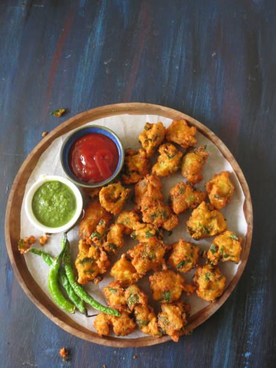

Kitna tasty hai ae cake!

Happy Birthday Navin.This virtual cake is for you.Doesn't it look so delicious.It should be so special because it's whose birthday it is after all !!! I hope your birthday is full of sunshine and rainbows and love and laughter! Be as Happy and Healthy as possible! You Are An Amazing Person in Every Way!!! Keep Smiling! Here I've given three types of cakes. Second two cakes are specifically for Mechanical Engineers and Writers.Oneday I wish I would send a cake like this when I start earning.
Visit my delicious and nutritious food zone,which will make your tongue water.Sorry I can give them to you virtually only but if I were in front of you I would try to give them at least a little bit. It will be started from tea with pokora after that your favourite paneer with paratha.But in the end sweet dish is must so I've kept Suji ka Halwa aur icecream bhi hai

Look at this cake. This is made for authors.I gave it to you because you're a wonderful author. whatever you write it gives an unique aspect of life and helps to think about good things which encourages us to live joyfully.




Itna sara icecream khud maat khana kyuki ae virtual hai toh mujhe bhi thoda share karna